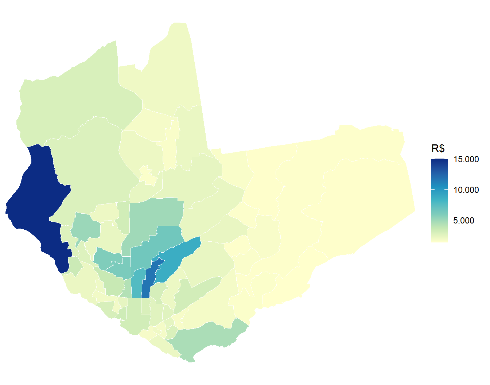
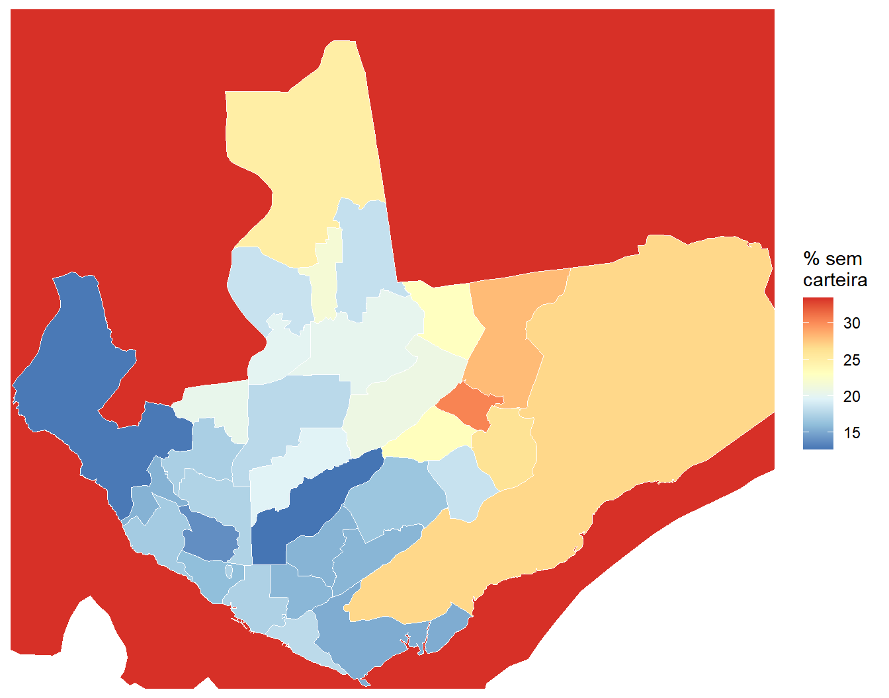

manaus <- lookup_muni(name_muni = "Manaus", year = 2022)$code_muni
manaus[1] 1302603Renda é a variável que atravessa todos os capítulos anteriores. Ela explica boa parte de onde vivem os grupos descritos no Capítulo 12, das condições de moradia do Capítulo 13 e do tempo gasto no deslocamento do Capítulo 15. É também a variável que o Censo 2022 tornou mais difícil de mapear.
Quem usou os Agregados por Setor Censitário de 2010 tinha o rendimento domiciliar por setor e podia calcular a renda média de cada pedaço da cidade. Em 2022 essa informação não existe. O arquivo de renda encolheu para cinco variáveis, todas referentes à pessoa responsável pelo domicílio, e o rendimento domiciliar saiu do universo.
Este capítulo trata do problema de frente. Mostra o que se perdeu, o que restou, como contornar a perda e o que os microdados da amostra ainda permitem que nenhum agregado permite. Ao final, olha para a origem da renda, que é o trabalho, com duas variáveis pouco exploradas, a posição na ocupação e as horas trabalhadas.
O município escolhido é Manaus (AM), a maior cidade da região Norte e um caso em que a distância entre a renda média e a renda típica é particularmente grande.
Manaus impõe uma decisão preliminar que vale para muitos municípios brasileiros e que raramente é explicitada. O território municipal é enorme e quase todo rural, enquanto praticamente toda a população vive numa mancha urbana comparativamente minúscula. Mapear o município inteiro produziria uma figura em que a cidade aparece como um borrão no canto, e os setores urbanos, que são o objeto da análise, ficariam pequenos demais para serem lidos.
Começamos obtendo o código do município e o arquivo Básico de 2022, que traz a coluna situacao, com a classificação de cada setor entre urbano e rural.
manaus <- lookup_muni(name_muni = "Manaus", year = 2022)$code_muni
manaus[1] 1302603Com o código em mãos, lemos o arquivo Básico e comparamos os dois grupos de setores em população e em área.
basico_2022 <- read_tracts(dataset = "Basico", year = 2022) |>
filter(code_muni == manaus) |>
select(code_tract, situacao, area_km2, V0001) |>
collect()
basico_2022 |>
group_by(situacao) |>
summarise(
setores = n(),
populacao = sum(V0001, na.rm = TRUE),
area_km2 = sum(area_km2, na.rm = TRUE)
) |>
mutate(
perc_populacao = 100 * populacao / sum(populacao),
perc_area = 100 * area_km2 / sum(area_km2)
) |>
knitr::kable(digits = 2, format.args = list(big.mark = ".", decimal.mark = ","))| situacao | setores | populacao | area_km2 | perc_populacao | perc_area |
|---|---|---|---|---|---|
| Rural | 109 | 20.012 | 9.764,77 | 0,97 | 85,65 |
| Urbana | 3.171 | 2.043.677 | 556,33 | 99,03 | 4,88 |
| NA | 1 | 0 | 1.079,90 | 0,00 | 9,47 |
O quadro justifica a decisão sozinho. Os setores urbanos concentram cerca de 99% da população em menos de 5% da área do município. Daqui em diante, este capítulo trabalha apenas com eles, e guardamos seus códigos em um vetor que servirá de filtro para todas as fontes.
setores_urbanos <- basico_2022 |>
filter(situacao == "Urbana") |>
pull(code_tract)
length(setores_urbanos)[1] 3171Duas ressalvas acompanham essa escolha. A primeira é que a restrição é analítica e não estatística, ou seja, ela muda o recorte territorial descrito e quase não altera os valores, justamente porque a população rural é pequena. A segunda é que em municípios com população rural expressiva a mesma restrição excluiria gente demais, e a decisão precisa ser refeita caso a caso.
A melhor forma de dimensionar a perda é colocar as duas estruturas lado a lado. Comecemos lendo os arquivos de renda das duas edições para Manaus.
Em 2010, a renda estava distribuída por três arquivos, além de variáveis no próprio Básico. Em 2022, restou um único arquivo temático.
basico_2010 <- read_tracts(dataset = "Basico", year = 2010) |>
filter(code_muni == manaus) |>
select(code_tract, V001, V002, V007, V011) |>
collect()
domrenda_2010 <- read_tracts(dataset = "DomicilioRenda", year = 2010) |>
filter(code_muni == manaus) |>
select(code_tract, V003) |>
rename(rend_dom_total = V003) |>
collect()
resprenda_2022 <- read_tracts(dataset = "ResponsavelRenda", year = 2022) |>
filter(code_muni == manaus) |>
select(code_tract, name_neighborhood, V06001, V06002, V06003, V06004, V06005) |>
collect() |>
filter(code_tract %in% setores_urbanos)
tibble(
Arquivo = c("Básico 2010", "DomicilioRenda 2010", "ResponsavelRenda 2022"),
Setores = c(nrow(basico_2010), nrow(domrenda_2010), nrow(resprenda_2022))
) |>
knitr::kable(col.names = c("Arquivo", "Setores lidos"),
format.args = list(big.mark = "."))| Arquivo | Setores lidos |
|---|---|
| Básico 2010 | 2.435 |
| DomicilioRenda 2010 | 2.435 |
| ResponsavelRenda 2022 | 3.121 |
Os dois arquivos de 2010 vêm com o município inteiro, e o de 2022 já vem restrito aos setores urbanos. A diferença de contagem tem essa origem, e não uma mudança no número de setores entre as edições. Vale registrar que os arquivos de 2010 disponibilizados pelo censobr não trazem a coluna situacao, de modo que a restrição urbana aplicada neste capítulo alcança os dados de 2022 e os microdados, e não os agregados de 2010, que entram apenas como material de comparação estrutural.
O que importa, de toda forma, é o conteúdo, resumido a seguir.
| Informação | 2010 | 2022 |
|---|---|---|
| Rendimento médio do responsável | Básico V005 e V007 |
V06004 |
| Variância do rendimento do responsável | Básico V006 e V008 |
V06005 |
| Rendimento médio das pessoas de 10 anos ou mais | Básico V009 e V011 |
Não divulgado |
| Rendimento total dos domicílios permanentes | DomicilioRenda V003 |
Não divulgado |
| Domicílios por faixa de renda per capita | DomicilioRenda V005 a V013 |
Não divulgado |
| Responsáveis por faixa de rendimento | ResponsavelRenda, 141 colunas |
Não divulgado |
A perda é substancial. Saíram as faixas de renda, que permitiam descrever a distribuição dentro do setor, saiu o rendimento das pessoas de dez anos ou mais, e saiu o rendimento domiciliar, que era a base de praticamente todo indicador de renda por setor produzido no país.
Registramos o fato sem opinar sobre a decisão do IBGE. O livro descreve o que existe, e o que existe agora é bem menos do que existia.
O arquivo ResponsavelRenda de 2022 tem cinco variáveis. Duas descrevem moradores, duas descrevem rendimento e uma conta responsáveis.
| Código | Descrição |
|---|---|
V06001 |
Pessoas responsáveis em domicílios particulares permanentes ocupados |
V06002 |
Moradores em domicílios particulares permanentes ocupados |
V06003 |
Variância do número de moradores |
V06004 |
Rendimento nominal médio mensal das pessoas responsáveis com rendimento |
V06005 |
Variância desse rendimento |
Duas ressalvas precisam acompanhar qualquer uso da V06004, e as duas costumam passar despercebidas.
A primeira está no nome da variável. O rendimento médio se refere às pessoas responsáveis com rendimento, o que exclui do cálculo as responsáveis sem qualquer rendimento. A média não descreve todas as responsáveis do setor, e sim as que declararam ter renda. Em áreas com muitas responsáveis sem rendimento, isso empurra a média para cima.
A segunda é que a variável já vem calculada como média. Não se relativiza, não se soma entre setores e, ao agregar para bairro, é preciso ponderar pelo número de responsáveis, e não tirar a média das médias.
summary(resprenda_2022$V06004) Min. 1st Qu. Median Mean 3rd Qu. Max. NAs
624 1498 1853 2890 2690 50803 27 A distribuição é fortemente assimétrica, com a média bem acima da mediana e um valor máximo dezenas de vezes maior que o valor típico. É o comportamento esperado de uma variável de renda, e já sugere o que veremos adiante sobre média e mediana.
A variância divulgada na V06005 permite algo que raramente se faz. Sua raiz quadrada é o desvio-padrão do rendimento dentro do setor, e a razão entre desvio-padrão e média, conhecida como coeficiente de variação, indica o quanto o setor é internamente heterogêneo. Dois setores podem ter a mesma renda média e realidades completamente diferentes.
resprenda_2022 <- resprenda_2022 |>
mutate(
desvio_padrao = sqrt(V06005),
coef_variacao = desvio_padrao / V06004
)
summary(resprenda_2022$coef_variacao) Min. 1st Qu. Median Mean 3rd Qu. Max. NAs
0.09798 0.69098 0.82192 0.93420 0.99083 12.98463 27 Metade dos setores de Manaus tem desvio-padrão em torno de oitenta por cento da média, o que é bastante heterogeneidade dentro de uma unidade tão pequena. Levemos ao mapa a renda média e o coeficiente de variação lado a lado.
manaus_geo <- read_census_tract(
code_tract = manaus,
year = 2022,
simplified = FALSE
) |>
select(code_tract) |>
inner_join(resprenda_2022, by = "code_tract")
limite_renda <- quantile(manaus_geo$V06004, 0.95, na.rm = TRUE)
limite_cv <- quantile(manaus_geo$coef_variacao, 0.95, na.rm = TRUE)
mapa_renda <- ggplot(manaus_geo) +
geom_sf(aes(fill = V06004), color = NA) +
scale_fill_distiller(palette = "YlGnBu", direction = 1,
name = "R$", na.value = "gray90",
limits = c(NA, limite_renda), oob = scales::squish,
labels = scales::label_number(big.mark = ".", decimal.mark = ",")) +
coord_sf(expand = FALSE) +
labs(subtitle = "Rendimento médio do responsável") +
theme_minimal() +
theme(axis.text = element_blank(), axis.ticks = element_blank(),
panel.grid = element_blank())
mapa_cv <- ggplot(manaus_geo) +
geom_sf(aes(fill = coef_variacao), color = NA) +
scale_fill_distiller(palette = "OrRd", direction = 1,
name = "Desvio-padrão\nsobre a média",
na.value = "gray90",
limits = c(NA, limite_cv), oob = scales::squish) +
coord_sf(expand = FALSE) +
labs(subtitle = "Heterogeneidade interna do setor") +
theme_minimal() +
theme(axis.text = element_blank(), axis.ticks = element_blank(),
panel.grid = element_blank())
mapa_renda + mapa_cv
oob = scales::squish
Renda tem cauda longa. Em Manaus, metade dos setores tem rendimento médio do responsável abaixo de dois mil reais, mas o valor máximo passa de cinquenta mil. Numa escala de cor linear, esse único setor consome quase toda a paleta e o restante da cidade fica indistinguível.
O Capítulo 7 resolveu problema parecido com a transformação de raiz quadrada, que comprime os valores altos. Aqui usamos outro recurso, que é limitar a escala. O argumento limits do scale_fill_* define o intervalo representado, e o argumento oob, de out of bounds, decide o que fazer com os valores fora dele. O padrão é transformá-los em ausentes, o que deixaria buracos no mapa. Com oob = scales::squish, eles são empurrados para o extremo da escala e recebem a cor mais intensa.
Adotamos como limite o percentil 95 de cada variável, calculado no próprio código. Os cerca de 5% de setores acima dele aparecem todos com a cor máxima, e a informação que se perde é a distinção entre esses setores extremos. Em troca, ganha-se a distinção entre os 95% restantes, que é onde está a cidade.
A escolha precisa ser declarada, e é por isso que a legenda da Figura 16.1 informa o corte. Um mapa com escala limitada e sem aviso induz o leitor a subestimar os extremos.
Os dois mapas não coincidem. Há setores de renda média alta e baixa dispersão, que são áreas socialmente homogêneas, e há setores de renda média intermediária e dispersão muito alta, onde convivem situações econômicas distintas. Um indicador de renda que ignore a segunda dimensão trata os dois casos como equivalentes.
O rendimento domiciliar deixou de ser divulgado, e a saída praticada por quem trabalha com os dados de 2022 é usar o rendimento da pessoa responsável em seu lugar. A substituição se apoia no fato de que as duas medidas guardam correlação alta entre si, o que pode ser verificado em 2010, ano em que ambas coexistem no mesmo setor censitário.
Estabelecida a equivalência aproximada, o passo seguinte é levar a variável a recortes espaciais diferentes do setor censitário.
O Capítulo 7 apresentou a interpolação dasimétrica do pacote cnefetools, que redistribui informação dos setores para outras malhas usando os endereços do CNEFE como guia. Naquele capítulo, o exemplo usou variáveis de total. Aqui usamos a única variável de média disponível no pacote, que é justamente a V06004, sob o nome avg_inc_resp.
A distinção importa e merece ser recuperada. Para uma variável de total, o valor do setor é dividido entre os pontos de endereço que caem dentro dele, e a unidade-alvo recebe a soma dos pontos que a compõem. Para uma variável de média, o valor do setor é atribuído a cada ponto, e a unidade-alvo recebe a média dos valores dos pontos que estão dentro dela. A consequência prática é que a média resultante fica ponderada pela densidade de endereços, e não pela área, o que é o comportamento desejável.
Usamos os bairros de Manaus como malha de destino.
bairros_manaus <- read_neighborhood(year = 2022, code_muni = manaus)
renda_bairro <- tracts_to_polygon(
code_muni = manaus,
polygon = bairros_manaus,
vars = "avg_inc_resp"
)O objeto devolvido é um sf com um polígono por bairro e a variável já interpolada. Vale conferir a amplitude do resultado antes de mapear.
renda_bairro |>
st_drop_geometry() |>
summarise(
bairros = n(),
minimo = min(avg_inc_resp, na.rm = TRUE),
mediana = median(avg_inc_resp, na.rm = TRUE),
maximo = max(avg_inc_resp, na.rm = TRUE)
) |>
knitr::kable(digits = 0, format.args = list(big.mark = ".", decimal.mark = ","))| bairros | minimo | mediana | maximo |
|---|---|---|---|
| 76 | 1.380 | 2.328 | 15.045 |
A função reporta, durante a execução, a proporção de pontos do CNEFE efetivamente aproveitados e a de setores em que a variável estava ausente. Vale sempre ler essas mensagens, porque uma cobertura baixa invalida o resultado. O mapa por bairro fica bem mais legível que o de setores para fins de comunicação.
ggplot(renda_bairro) +
geom_sf(aes(fill = avg_inc_resp), color = "white", linewidth = 0.2) +
scale_fill_distiller(palette = "YlGnBu", direction = 1,
name = "R$", na.value = "gray90",
labels = scales::label_number(big.mark = ".", decimal.mark = ",")) +
coord_sf(expand = FALSE) +
theme_minimal() +
theme(axis.text = element_blank(), axis.ticks = element_blank(),
panel.grid = element_blank())
Valem as mesmas ressalvas listadas no Capítulo 7. A interpolação assume que a variável se distribui de forma homogênea entre os endereços do setor, o que é uma aproximação, e nenhuma interpolação cria informação que não existia.
Todos os indicadores até aqui são médias. Média de renda por setor, média por bairro, e nada mais. Os agregados não permitem outra coisa, porque não divulgam nem mediana nem faixas. Os microdados da amostra permitem.
A diferença não é um detalhe técnico. Em variáveis de renda, a média é fortemente puxada pelos valores altos, e por isso descreve mal a situação típica. É o que veremos.
ap_manaus <- read_weighting_area(
code_weighting = manaus,
year = 2010,
simplified = FALSE
)
ap_cods <- ap_manaus |>
pull(code_weighting)
cols_pes <- c(
"V0300", # Identificador do domicílio (conglomerado)
"V0010", # Peso amostral calibrado
"code_weighting", # Área de ponderação
"V1006", # Situação do domicílio, urbana ou rural
"V0641", "V0642", "V0643", "V0644", # Condição de ocupação na semana de referência
"V0648", # Posição na ocupação no trabalho principal
"V0653", # Horas habitualmente trabalhadas por semana
"V6511", # Rendimento no trabalho principal
"V6531" # Rendimento domiciliar per capita
)
md_manaus <- read_population(year = 2010, columns = cols_pes) |>
filter(code_weighting %in% ap_cods, V1006 == "1") |>
collect()
pes_ap <- md_manaus |>
group_by(code_weighting) |>
summarize(n_ind = sum(V0010))
md_manaus <- md_manaus |>
left_join(pes_ap, by = join_by(code_weighting))
pa_manaus <- md_manaus |>
as_survey_design(
ids = V0300,
strata = code_weighting,
weights = V0010,
fpc = n_ind
)
c(areas_de_ponderacao = length(ap_cods), registros = nrow(md_manaus))areas_de_ponderacao registros
33 86989 O filtro por V1006 mantém a coerência com a restrição urbana da Seção 16.2. Ele remove poucas centenas de registros e todas as áreas de ponderação seguem com amostra suficiente, o que confirma que a restrição é de recorte territorial, e não de conteúdo.
As áreas de ponderação, porém, são polígonos que cobrem o município inteiro, inclusive a parte rural, e duas delas sozinhas respondem por quase toda a área de Manaus. Para que os mapas por área de ponderação fiquem legíveis, guardamos a extensão da mancha urbana e a usaremos para recortar a visualização, sem descartar nenhuma estimativa.
limites_urbanos <- st_bbox(manaus_geo)
limites_urbanos xmin ymin xmax ymax
-60.116294 -3.163241 -59.822600 -2.902195 Calculamos a média e a mediana do rendimento domiciliar per capita, junto com os quartis.
pa_manaus |>
summarise(
media = survey_mean(V6531, na.rm = TRUE, vartype = "ci"),
mediana = survey_median(V6531, na.rm = TRUE, vartype = "ci")
) |>
knitr::kable(digits = 2, format.args = list(big.mark = ".", decimal.mark = ","))| media | media_low | media_upp | mediana | mediana_low | mediana_upp |
|---|---|---|---|---|---|
| 745,13 | 687,52 | 802,74 | 349,55 | 340 | 353,33 |
A média é mais que o dobro da mediana. Metade dos moradores de Manaus vivia em domicílios com rendimento per capita abaixo de trezentos e cinquenta reais, enquanto a média passava de setecentos. Nenhum indicador construído a partir dos agregados de 2022 revelaria isso, porque lá só existe média.
Os quartis completam o retrato.
pa_manaus |>
summarise(
quartis = survey_quantile(V6531, quantiles = c(0.25, 0.5, 0.75, 0.9),
na.rm = TRUE, vartype = "ci")
) |>
select(starts_with("quartis_q")) |>
select(!ends_with("_low") & !ends_with("_upp")) |>
knitr::kable(digits = 2, format.args = list(big.mark = ".", decimal.mark = ","))| quartis_q25 | quartis_q50 | quartis_q75 | quartis_q90 |
|---|---|---|---|
| 182 | 349,55 | 673,33 | 1.380 |
O quarto mais pobre da população vivia com até cento e oitenta reais per capita, e o décimo mais rico começava acima de mil e trezentos. A distância entre os extremos é de mais de sete vezes.
A comparação entre média e mediana pode ser levada ao território, e o resultado é revelador.
renda_ap <- pa_manaus |>
group_by(code_weighting) |>
summarise(
media = survey_mean(V6531, na.rm = TRUE),
mediana = survey_median(V6531, na.rm = TRUE)
)
renda_ap_geo <- ap_manaus |>
left_join(renda_ap, by = join_by(code_weighting))
mapa_media <- ggplot(renda_ap_geo) +
geom_sf(aes(fill = media), color = "white", linewidth = 0.2) +
scale_fill_distiller(palette = "BuPu", direction = 1, name = "R$",
na.value = "gray90", limits = c(0, max(renda_ap$media)),
labels = scales::label_number(big.mark = ".", decimal.mark = ",")) +
coord_sf(xlim = limites_urbanos[c("xmin", "xmax")],
ylim = limites_urbanos[c("ymin", "ymax")],
expand = FALSE) +
labs(subtitle = "Média") +
theme_minimal() +
theme(axis.text = element_blank(), axis.ticks = element_blank(),
panel.grid = element_blank())
mapa_mediana <- ggplot(renda_ap_geo) +
geom_sf(aes(fill = mediana), color = "white", linewidth = 0.2) +
scale_fill_distiller(palette = "BuPu", direction = 1, name = "R$",
na.value = "gray90", limits = c(0, max(renda_ap$media)),
labels = scales::label_number(big.mark = ".", decimal.mark = ",")) +
coord_sf(xlim = limites_urbanos[c("xmin", "xmax")],
ylim = limites_urbanos[c("ymin", "ymax")],
expand = FALSE) +
labs(subtitle = "Mediana") +
theme_minimal() +
theme(axis.text = element_blank(), axis.ticks = element_blank(),
panel.grid = element_blank())
mapa_media + mapa_mediana
As duas escalas de cor são deliberadamente iguais, para que a comparação seja visual e direta. O mapa da média destaca com força uma ou duas áreas, enquanto o da mediana é bem mais uniforme. A razão entre as duas medidas mede exatamente esse efeito.
renda_ap |>
mutate(razao = media / mediana) |>
summarise(
razao_minima = min(razao),
razao_mediana = median(razao),
razao_maxima = max(razao)
) |>
knitr::kable(digits = 2, format.args = list(decimal.mark = ","))| razao_minima | razao_mediana | razao_maxima |
|---|---|---|
| 1,3 | 1,6 | 4,86 |
Há áreas de ponderação em que a média é quase cinco vezes a mediana. São justamente as áreas de maior desigualdade interna, e são as que um indicador baseado apenas em média descreve pior.
A renda vem do trabalho, e o Questionário da Amostra descreve o trabalho com detalhe considerável. Duas variáveis pouco usadas interessam particularmente. A V0648 informa a posição na ocupação, ou seja, o vínculo que a pessoa tinha no trabalho principal. A V0653 informa as horas habitualmente trabalhadas por semana nesse mesmo trabalho.
Antes de usá-las, é preciso definir quem responde. O bloco de trabalho começa com quatro perguntas de triagem, e basta responder sim a qualquer uma delas para ser considerado ocupado na semana de referência.
md_manaus <- md_manaus |>
mutate(
ocupado = coalesce(
V0641 == "1" | V0642 == "1" | V0643 == "1" | V0644 == "1",
FALSE
),
autoconsumo = coalesce(V0644 == "1", FALSE)
)
md_manaus |>
summarise(
registros = n(),
ocupados = sum(ocupado),
apenas_autoconsumo = sum(autoconsumo),
ocupados_sem_V0653 = sum(ocupado & is.na(V0653)),
ocupados_sem_V0648 = sum(ocupado & is.na(V0648))
)# A tibble: 1 × 5
registros ocupados apenas_autoconsumo ocupados_sem_V0653 ocupados_sem_V0648
<int> <int> <int> <int> <int>
1 86989 35898 150 0 150O resultado dessa checagem é o ponto metodológico da seção. A variável de horas não tem nenhum ausente entre os ocupados, mas a de posição na ocupação tem alguns, e não é acaso.
md_manaus |>
filter(ocupado, is.na(V0648)) |>
summarise(
ausentes_em_V0648 = n(),
destes_apenas_autoconsumo = sum(autoconsumo)
)# A tibble: 1 × 2
ausentes_em_V0648 destes_apenas_autoconsumo
<int> <int>
1 150 150Todos os ausentes são pessoas cujo único trabalho foi a produção para consumo próprio.
V0653 pode ser usada direto, V0648 não
O fluxo do Questionário da Amostra de 2010 explica o resultado acima. Depois do quesito 6.47, a instrução determina que, se a pessoa respondeu sim ao quesito 6.44, que é o de trabalho na plantação, criação ou pesca somente para alimentação dos moradores do domicílio, o entrevistador passe direto ao quesito 6.53. Ou seja, a pergunta sobre posição na ocupação, que é o quesito 6.48, não é feita a quem trabalhou apenas para o próprio consumo.
As consequências práticas são duas.
A V0653, das horas, corresponde ao quesito 6.53, alcançado por todos os caminhos do bloco. Seu universo é o conjunto de ocupados, e ela pode ser usada diretamente, bastando definir a ocupação a partir de V0641 a V0644.
A V0648, da posição na ocupação, corresponde ao quesito 6.48 e exclui os ocupados apenas em autoconsumo. Seu denominador correto é, portanto, o de ocupados menos aqueles com V0644 igual a 1. Tratar os ausentes como não resposta, ou aplicar na.rm = TRUE sem pensar, produziria percentuais sobre um universo que não é o da pergunta.
Em Manaus o ajuste desloca pouco o resultado, porque o autoconsumo é raro numa capital. Em municípios rurais ou amazônicos de menor porte, o mesmo cuidado muda bastante os percentuais, e é lá que a distinção pesa.
Com o universo correto, calculamos a distribuição por posição na ocupação.
pa_manaus <- md_manaus |>
as_survey_design(ids = V0300, strata = code_weighting,
weights = V0010, fpc = n_ind)
posicoes <- c("1" = "Empregado com carteira assinada",
"2" = "Militar",
"3" = "Empregado pelo regime jurídico dos servidores públicos",
"4" = "Empregado sem carteira assinada",
"5" = "Conta própria",
"6" = "Empregador",
"7" = "Não remunerado")
pa_manaus |>
filter(ocupado, !autoconsumo) |>
mutate(posicao = factor(V0648, levels = names(posicoes), labels = posicoes)) |>
group_by(posicao) |>
summarise(proporcao = survey_prop(vartype = "ci")) |>
knitr::kable(digits = 4, format.args = list(decimal.mark = ","))| posicao | proporcao | proporcao_low | proporcao_upp |
|---|---|---|---|
| Empregado com carteira assinada | 0,5005 | 0,4944 | 0,5067 |
| Militar | 0,0136 | 0,0124 | 0,0150 |
| Empregado pelo regime jurídico dos servidores públicos | 0,0554 | 0,0527 | 0,0583 |
| Empregado sem carteira assinada | 0,1975 | 0,1926 | 0,2025 |
| Conta própria | 0,2042 | 0,1992 | 0,2092 |
| Empregador | 0,0129 | 0,0115 | 0,0145 |
| Não remunerado | 0,0158 | 0,0142 | 0,0176 |
Metade dos ocupados de Manaus tinha carteira assinada em 2010. Somando quem trabalhava sem carteira e quem trabalhava por conta própria, chega-se a cerca de dois quintos dos ocupados em posições sem vínculo formal de emprego.
As horas trabalhadas completam o quadro.
pa_manaus |>
filter(ocupado) |>
summarise(
media = survey_mean(V0653, na.rm = TRUE, vartype = "ci"),
mediana = survey_median(V0653, na.rm = TRUE, vartype = "ci"),
acima_de_44h = survey_mean(V0653 > 44, na.rm = TRUE, vartype = "ci")
) |>
knitr::kable(digits = 3, format.args = list(decimal.mark = ","))| media | media_low | media_upp | mediana | mediana_low | mediana_upp | acima_de_44h | acima_de_44h_low | acima_de_44h_upp |
|---|---|---|---|---|---|---|---|---|
| 39,297 | 39,062 | 39,531 | 40 | 40 | 42 | 0,294 | 0,287 | 0,3 |
A jornada mediana é de quarenta horas semanais, e quase três em cada dez ocupados trabalhavam acima de quarenta e quatro horas, que é o limite da jornada semanal fixado pela Constituição Federal em seu artigo 7º. O cruzamento das duas variáveis mostra que jornada e vínculo caminham juntos.
pa_manaus |>
filter(ocupado, !autoconsumo) |>
mutate(posicao = factor(V0648, levels = names(posicoes), labels = posicoes)) |>
group_by(posicao) |>
summarise(
horas_medias = survey_mean(V0653, na.rm = TRUE),
rendimento_mediano = survey_median(V6511, na.rm = TRUE)
) |>
select(posicao, horas_medias, rendimento_mediano) |>
knitr::kable(
col.names = c("Posição na ocupação", "Horas semanais médias",
"Rendimento mediano no trabalho principal"),
digits = 1,
format.args = list(big.mark = ".", decimal.mark = ",")
)| Posição na ocupação | Horas semanais médias | Rendimento mediano no trabalho principal |
|---|---|---|
| Empregado com carteira assinada | 40,8 | 800 |
| Militar | 43,9 | 2.000 |
| Empregado pelo regime jurídico dos servidores públicos | 35,5 | 1.700 |
| Empregado sem carteira assinada | 37,7 | 510 |
| Conta própria | 39,5 | 700 |
| Empregador | 44,5 | 3.500 |
| Não remunerado | 18,4 | 0 |
A tabela desfaz uma intuição comum. Não é verdade que quem ganha menos trabalhe menos. Quem trabalha sem carteira assinada tem jornada média próxima da de quem tem carteira e rendimento mediano bem inferior. No outro extremo, empregadores e militares têm as jornadas mais longas, com rendimentos muito mais altos. A relação entre horas e renda não é proporcional, e o que a organiza é o vínculo.
Por fim, levamos a informalidade ao território.
informal_ap <- pa_manaus |>
filter(ocupado, !autoconsumo) |>
group_by(code_weighting) |>
summarise(sem_carteira = survey_mean(V0648 == "4", na.rm = TRUE))
ap_manaus |>
left_join(informal_ap, by = join_by(code_weighting)) |>
ggplot() +
geom_sf(aes(fill = 100 * sem_carteira), color = "white", linewidth = 0.2) +
scale_fill_distiller(palette = "RdYlBu", direction = -1,
name = "% sem\ncarteira", na.value = "gray90") +
coord_sf(xlim = limites_urbanos[c("xmin", "xmax")],
ylim = limites_urbanos[c("ymin", "ymax")],
expand = FALSE) +
theme_minimal() +
theme(axis.text = element_blank(), axis.ticks = element_blank(),
panel.grid = element_blank())
O mapa da informalidade é quase o negativo do mapa da renda mediana produzido na seção anterior, o que confirma no território a relação que a tabela mostrou entre vínculo e rendimento.
Este é o último capítulo do livro, e vale olhar para trás.
A Parte 3 percorreu cinco temas com uma mesma lógica de trabalho. Em cada um deles, uma pergunta territorial concreta determinou quais produtos do Censo seriam combinados, e não o contrário. O Capítulo 12 mostrou onde vivem os grupos que a política precisa alcançar e por que contagem e proporção apontam para lugares diferentes. O Capítulo 13 mediu a precariedade e o vazio do estoque habitacional e localizou as frentes de expansão. O Capítulo 14 tratou do que chega até o domicílio. O Capítulo 15 tratou de como se sai dele. E este capítulo tratou do que sustenta tudo isso.
Três lições atravessam os cinco capítulos e valem mais que qualquer indicador específico. A primeira é que o denominador precisa ser declarado junto com o numerador, porque é ele que define a pergunta que o indicador responde. A segunda é que a fonte determina a escala, de modo que trocar de produto do Censo significa trocar de unidade espacial, e a leitura precisa acompanhar essa troca. A terceira é que os valores ausentes quase sempre significam alguma coisa, seja sigilo, seja não aplicação do quesito, e investigá-los costuma ensinar mais sobre os dados do que o próprio indicador.
O Censo continuará mudando. Variáveis entrarão, como o modo de transporte em 2022, e sairão, como o rendimento domiciliar por setor. O leitor que tiver incorporado o hábito de consultar o dicionário, verificar o universo de cada quesito e conferir se os totais fecham estará preparado para trabalhar com o que vier.
Calcule, para um município à sua escolha, o coeficiente de variação do rendimento do responsável por setor a partir de V06004 e V06005, e mapeie o resultado. Identifique os setores que combinam renda média alta com coeficiente de variação alto e descreva o que caracteriza essas áreas.
Reproduza, para dois municípios de portes diferentes, a comparação entre média e mediana do rendimento domiciliar per capita por área de ponderação. Calcule a razão entre as duas medidas e discuta o que a diferença entre os dois municípios informa sobre a desigualdade interna de cada um.
Na Seção 16.8, o universo de V0648 exclui quem trabalhou apenas para consumo próprio. Escolha um município amazônico de pequeno porte, calcule a proporção de ocupados nessa situação e compare com o valor obtido para Manaus. Em seguida, calcule a distribuição por posição na ocupação com e sem o ajuste de universo e meça o quanto os percentuais mudam.
Usando V0653 e V6511, construa um indicador de rendimento por hora trabalhada no trabalho principal e compare sua distribuição entre as posições na ocupação. Discuta que informação esse indicador acrescenta em relação às duas variáveis analisadas separadamente, e que cuidados são necessários com os casos de rendimento igual a zero.